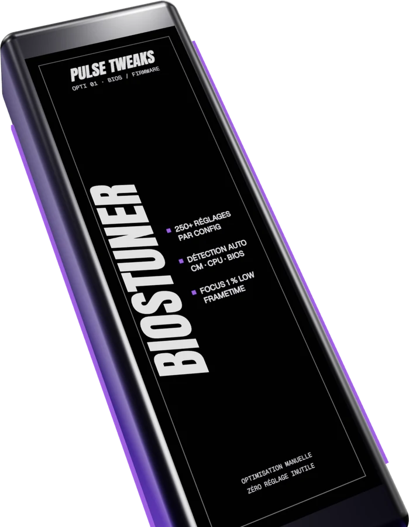

Mon BIOS est resté
en réglages d'usine
C'est l'étage le plus bas de la machine, celui que presque personne n'ouvre. Une carte mère sort d'usine avec des réglages prudents, choisis pour démarrer sur n'importe quelle configuration — pas pour tirer le meilleur de la tienne.

Ces valeurs-là ne se voient nulle part une fois Windows lancé : aucun logiciel ne te dira qu'elles bride ta machine, et elles survivent à toutes les réinstallations.
01Ce que tu as sans doute déjà essayé
Tu as activé le profil mémoire
C'est le premier réglage, et le plus connu. Il en reste plusieurs dizaines qui comptent, et qui ne sont pas dans le même menu.
Tu as mis à jour le BIOS
Une mise à jour remet souvent les réglages par défaut. Beaucoup de machines repartent de zéro sans que personne s'en rende compte.
Tu as lu un guide pour ta carte mère
Les guides visent un modèle, pas ta configuration exacte. Le même réglage peut aider chez l'un et gêner chez l'autre.
02Ce que ça peut être
Les options cachées
Une partie des réglages n'apparaît pas dans l'interface simplifiée que propose le constructeur.
Les valeurs prudentes par défaut
Elles garantissent que la machine démarre partout. C'est leur but, et ce n'est pas le tien.
Un firmware qui ne connaît pas ton processeur
Une version ancienne applique des réglages génériques à une puce qu'elle gère mal.
03Ce que BiosTuner règle
Plus de 250 réglages BIOS analysés et adaptés à ta carte mère, options cachées comprises. Détection automatique du processeur, du chipset et de la version du firmware avant toute modification.
Le BIOS est aussi l'endroit où une erreur se paie le plus cher, et c'est pourquoi l'ordre compte : détection du matériel, contrôle de compatibilité, relevé de l'état d'origine, puis seulement les modifications — une par une, vérifiées après application. Ce qui est déjà bien réglé n'est pas touché.
Ce que ça ne fait pas
On ne fait pas d'overclocking hasardeux et on ne pousse rien au-delà de ce que ta machine tient. L'état d'origine est relevé avant, et reste restaurable.
04Comment ça se passe
Le ticket
Tu ouvres un ticket sur le Discord avec ta configuration. C'est gratuit, et rien n'est engagé à ce stade.
Le diagnostic
On regarde ta machine et on te dit quelles optis ont du sens pour toi — parfois une seule, parfois aucune. Ce diagnostic passe avant tout paiement.
L'intervention
Sur un créneau convenu avec toi, en prise en main à distance. C'est un technicien qui règle, à la main, machine par machine : il n'y a pas de profil universel appliqué d'un bloc.
Le contrôle
On t'explique ce qui a été fait, réglage par réglage. L'état d'origine est conservé, et tout est réversible.
05Questions
C'est risqué de toucher au BIOS ?
Mal fait, oui. C'est exactement pour ça que la détection du matériel et le contrôle de compatibilité passent avant tout réglage, et que l'état d'origine est sauvegardé.
Il faut que je sois devant mon PC ?
Oui. L'intervention se fait en prise en main à distance, sur un créneau convenu avec toi.
J'ai un PC portable, il y a quelque chose à faire ?
Moins que sur une machine fixe : les constructeurs verrouillent une partie des options. On regarde ce qui est accessible sur ton modèle et on te dit franchement si ça vaut le coup — parfois la réponse est non, et une autre opti te servira davantage.